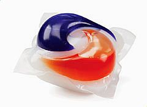

My name is Zachary Gasparetti. I'm Italian and Polish. My major is Information Technology and Management.
I'm really interested in web development since it pairs well with my others interests of art, design, architecture, and photography. I feel there is also money to make in the field. I'd like to get a side job in it while in school. My goal for this class is to finish it with enough knowledge and direction to try getting a job in it, but I still have a long way to go. I also like cats.
 Tide Pods are a funny meme from the internet that is actually pretty dangerous. Most people are smart of enough to enjoy the meme and not actually eat them. However, there are still an exceptions. Those that actually have eaten them and barely survived often tell their story. In order to clean an entire load of clothes with one little package, the detergent inside is very concentrated. The downside of this is that it only makes it more dangerous. The soap in Tide Pod soap is water activated. Conveniently, the esophagus is also a wet part of the body, and when one gets this down their throat, they can't spit it out. Very quickly the detergent liquefies the esophagus. If medical treatment is not administered in the next 1-2 hours, the person will die.
{kind=link}